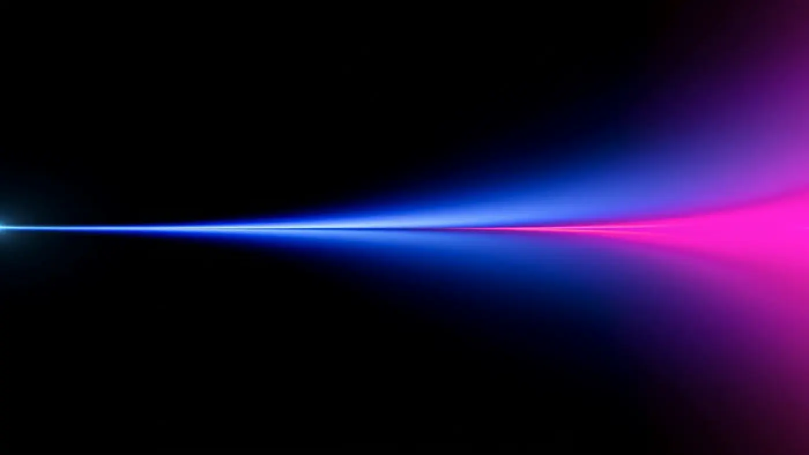

<!-- Replace the asset URLs below with your final WordPress Media Library or CDN URLs. -->
<div
  class="cirion-hero cirion-hero--data"
  data-cirion-hero
  data-base-speed="0.55"
  data-hover-speed="1"
  data-cursor-sensitivity="0.005"
  style="
    --video-pos-desktop: 56% 50%;
    --video-pos-tablet: 60% 50%;
    --video-pos-mobile: 68% 50%;
  "
>
  <div class="cirion-hero__surface">
    <div class="cirion-hero__poster-shell" aria-hidden="true">
      
    </div>

    <video
      class="cirion-hero__video"
      autoplay
      muted
      loop
      playsinline
      preload="metadata"
      poster="../assets/optimized/data/poster.webp"
      aria-hidden="true"
      tabindex="-1"
    >
      <source src="../assets/optimized/data/video.webm" type="video/webm" />
      <source src="../assets/optimized/data/video.mp4" type="video/mp4" />
    </video>

    <div class="cirion-hero__veil" aria-hidden="true"></div>
    <div class="cirion-hero__mesh" aria-hidden="true"></div>
    <div class="cirion-hero__glow" aria-hidden="true"></div>
    <div class="cirion-hero__safe-zone" aria-hidden="true"></div>
    <div class="cirion-hero__content" hidden aria-hidden="true"></div>
  </div>
</div>
